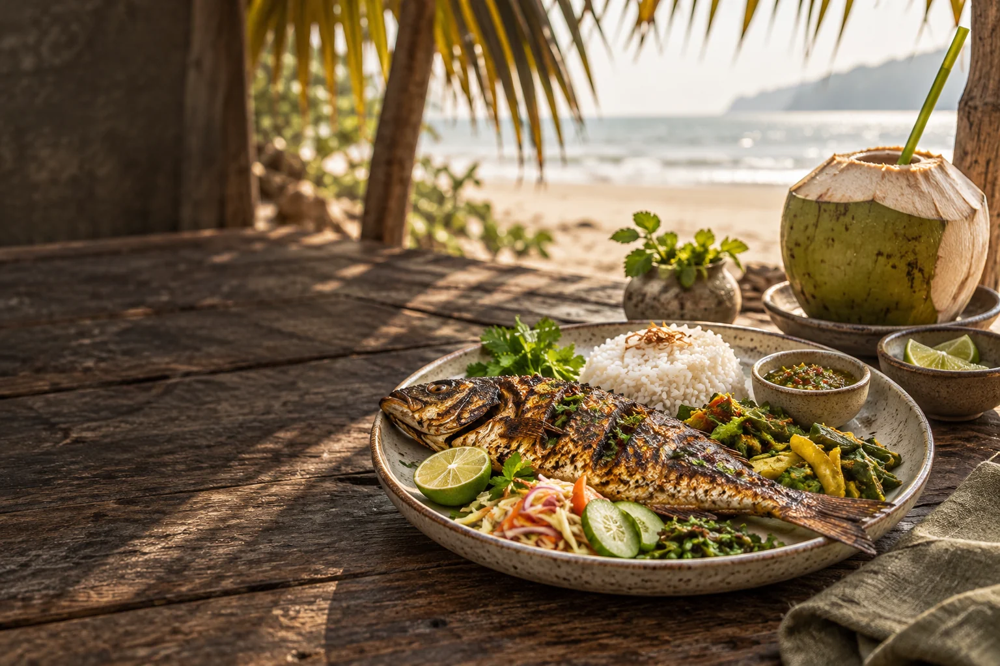
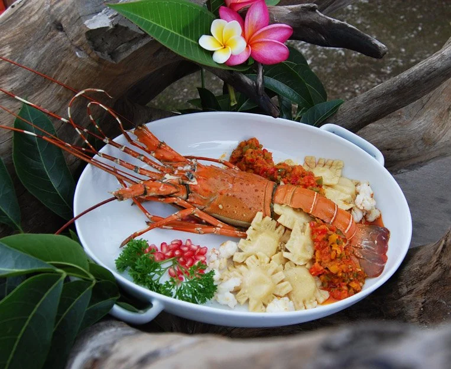

From this place / to your plateSavor where
Savor where
you are.
Dining at Mermaid
Good food has a way of making the hours stretch. Pull up a chair and let it.
Garden-grown greens, the day's catch and recipes with roots nearby. Food that feels right at home here.

02 / Eat the TimeCome hungry.
Come hungry.
Stay a while.
The resort's Eat the Time restaurant is a place for long conversations, fresh coastal cooking, and enjoying the produce of the surrounding region. Ingredients are sourced close to home where possible.

03 / Breakfast ClubA better way
A better way
to begin.
Let mornings linger over breakfast and something freshly squeezed. The garden, sea air and a little extra time make the first meal of the day feel like an occasion.
“A meal tastes better when it belongs to the place.”
04 / The Mermaid tableGrown near.
Grown near.
Shared here.
The resort describes a close-to-home sourcing philosophy, including produce from within roughly ten kilometers where possible.